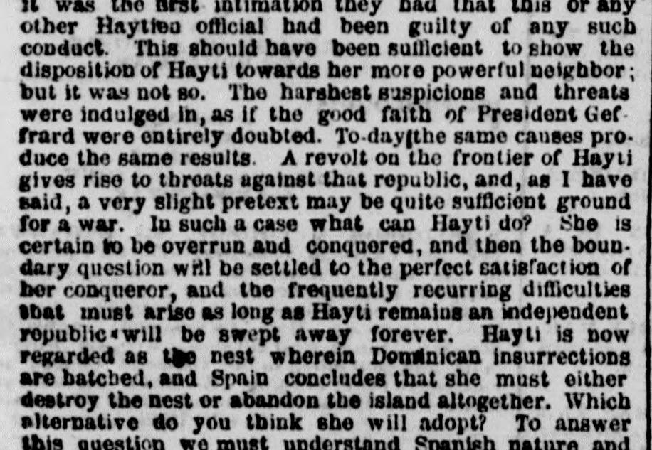
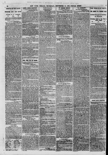

See the full pageVer la página completaHayti is now regarded as IRs nest wherein Dominican Insurrections areHaití es considerado ahora como el nido en el que las insurrecciones dominicanas son
The New York Herald reported that Spain views the independent republic of Hayti as the breeding ground for Dominican insurrections and believes it must either destroy Hayti or abandon the island. Driven by national pride rather than financial interest, Spain will refuse to abandon St. Domingo and will instead tighten its grip on the island, potentially annexing Hayti to prolong its rule.The New York Herald informó que España considera a la república independiente de Haití como el foco germinal de las insurrecciones dominicanas, juzgando que debe destruir a Haití o abandonar la isla. Movida por el orgullo nacional antes que por intereses financieros, España se negará a abandonar Santo Domingo y, por el contrario, afianzará su dominio en la isla, proyectando posiblemente anexionar a Haití para prolongar su permanencia.
FULL TEXT:TRADUCCIÓN:
it was the first intimation they had that this or any other Haytien official had been guilty of any such conduct. This should have been sufficient to show the disposition of Hayti towards her more powerful neighbor; but it was not so. The harshest suspicions and threats were indulged in, as if the good faith of President Geffrard were entirely doubted. To-day the same causes produce the same results. A revolt on the frontier of Hayti gives rise to threats against that republic, and, as I have said, a very slight pretext may be quite sufficient ground for a war. In such a case what can Hayti do? She is certain to be overrun and conquered, and then the boundary question will be settled to the perfect satisfaction of her conqueror, and the frequently recurring difficulties that must arise as long as Hayti remains an independent republic will be swept away forever. Hayti is now regarded as the nest wherein Dominican insurrections are hatched, and Spain concludes that she must either destroy the nest or abandon the island altogether. Which alternative do you think she will adopt? To answer this question we must understand Spanish nature andfue la primera intimación que tuvieron de que este o cualquier otro oficial haitiano hubiera sido culpable de conducta alguna tal. Esto debería haber sido suficiente para mostrar la disposición de Haití hacia su vecino más poderoso; pero no fue así. Las sospechas y amenazas más duras fueron induladas, como si la buena fe del Presidente Geffrard fuera enteramente dudada. Hoy las mismas causas producen los mismos resultados. Una revuelta en la frontera de Haití da lugar a amenazas contra esa república, y, como he dicho, un pretexto muy leve puede ser fundamento bastante suficiente para una guerra. En tal caso ¿qué puede hacer Haití? Está segura de ser invadida y conquistada, y entonces la cuestión de límites será resuelta a la perfecta satisfacción de su conquistador, y las dificultades frecuentemente recurrentes que deben surgir mientras Haití permanezca una república independiente serán barridas para siempre. Haití es ahora considerada como el nido donde las insurrecciones dominicanas son incubadas, y España concluye que debe ya sea destruir el nido o abandonar la isla por completo. ¿Cuál alternativa piensa usted que adoptará? Para responder esta pregunta debemos entender la naturaleza española y
[Editor's note: the paper writes of the east as part of Hayti. From 1822 to 1844 the Dominican Republic was held by Haitian military occupation, against its people's will; it restored its independence on February 27, 1844.][Nota del editor: el periódico habla del este como parte de Haití. De 1822 a 1844 la República Dominicana estuvo bajo ocupación militar haitiana, contra la voluntad de su pueblo; restauró su independencia el 27 de febrero de 1844.]
The New York Herald. New York, September 17, 1863. Page 10.